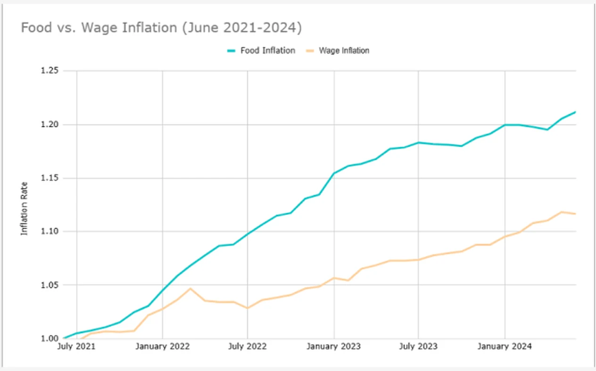
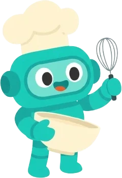
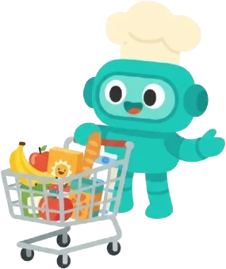

Food prices outran wages for four straight years. So the one thing Skrimp was never allowed to cost a family was time.
Groceries are up 26.8% since 2020. Pay is not.

I pulled Statistics Canada's food and wage series for June 2021 to 2024 and plotted them against each other, because I wanted to know whether this was a spending problem or an arithmetic one. Food inflation ran at 6.6%. Wage inflation ran at 3.7%. The lines separate in early 2022 and never come back together.
That gap is not abstract inflation. It is the item you put back. The recipe you stopped making. The Sunday session that used to feel like cooking and now feels like damage control. Younger households, already carrying 30% less generational wealth than boomers were at the same age, absorb it worst.
Nobody can really control their rent, their utilities or their car insurance. Groceries were the one line families told me felt like something they could actually tackle, which is exactly why they were already working so hard at it. Every household I spoke to was running a manual savings algorithm in their head, every week, unasked. That is not a motivation problem. It is a tooling problem.
CTV News Kitchener, September 2025. The cost of living story, and Skrimp inside it.
Three tools. None of them talking to each other.
→ Flyer apps show what's on sale. They have no idea what you're cooking.
→ Recipe apps look beautiful. They have no idea what things cost.
→ Budget apps tell you what you spent. After you've already spent it.
Families don't stop trying because they aren't motivated. They stop because the coordination tax compounds: the deal that expired before you got there. The "budget recipe" that quietly needs three specialty items. The list you built carefully at home and abandoned halfway down the aisle. Not a motivation problem. A tooling problem, invisible, persistent, and costing real money every single week.
Food they like
Recipe apps nail this one and then quietly price you out of it. A plan nobody wants to cook is not a plan, it is a spreadsheet with pictures.

At prices they can afford
Budget apps nail this one, but only in hindsight. They tell you what you spent after you have already spent it, which is not help, it is a receipt.

On what is actually on sale
Flyer apps nail this one and have no idea what you are cooking. A deal you cannot build a week around is just a number on a page.

Families were already running this algorithm in their heads, so Skrimp was never allowed to ask them to change. It compares live flyer prices across 15+ Canadian grocery stores, plans the week around whatever is actually on sale, and auto-adds the list to the cart. Families save $50-$100 a week, and it stays free, because a household that cannot afford food cannot afford a subscription to save on it either.